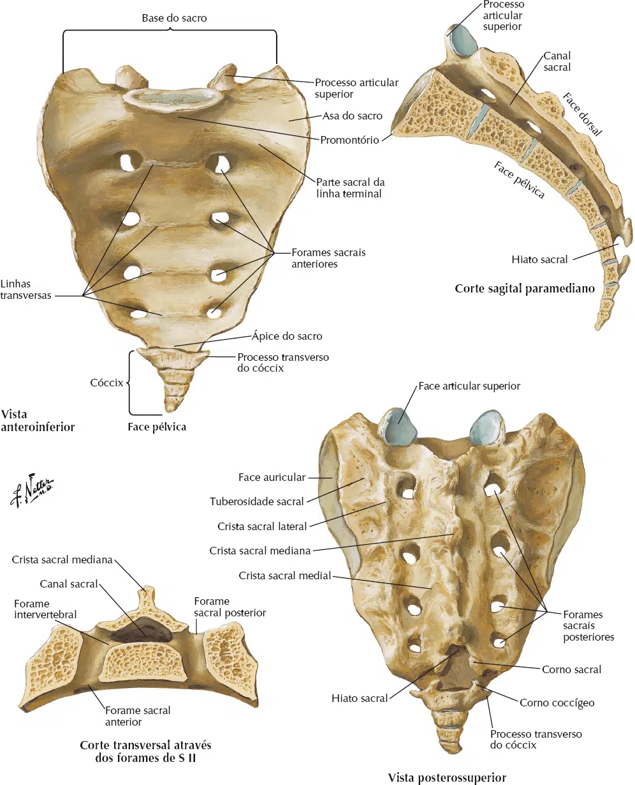

Este osso é formado por 5 vértebras que se fundiram e formaram um único osso em um adulto.
O sacro tem o formato de uma pá, com o ápice apontado inferiormente e anteriormente.
Quatro conjuntos de forames sacrais pélvicos (anteriores) (similares aos forames intervertebrais em seções mais superiores da coluna) transmitem nervos e vasos sanguíneos.
Suas características são:
Forames sacrais;
Base;
Asas maior e menor;
Promontório;
Processos articulares superiores;
Canal sacral;
Crista sacral mediana;
Corno sacral;
Hiato sacral;
Ápice sacral.
